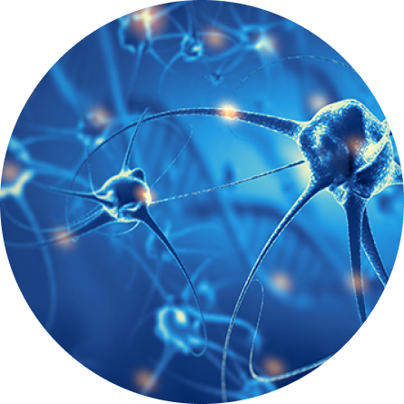

Вторично-прогрессирующий рассеянный склероз с обострениями, длительное применение сипонимода
Бабичева Наталья Николаевна
Врач-невролог высшей категории, к.м.н.

Пациентка Ш.
ГОД РОЖДЕНИЯ: 1975
Пол: Ж
Профессия/Образ жизни: творческая профессия, есть ребенок, ухаживает за пожилой мамой продолжает работать
Аллергологический и наследственный анамнез без особенностей.
Жалобы

Выраженная общая слабость, повышенная утомляемость, слабость в ногах, дистанция ходьбы без отдыха – более 300 м
Нарушение мелкой моторики в руках

Нарушения функции тазовых органов по типу императивных позывов на мочеиспускание
МРТ
Исследование
Сопутствующие заболевания

- Не отмечено
Результаты лечения

Рассеянный склероз, вторично-прогрессирующее течение с обострениями, ремиссия
EDSS 4,5б
Состояние пациентки стабильное, обострений не отмечено. Сохраняется общая слабость и утомляемость в ногах, EDSS 4,5 б.